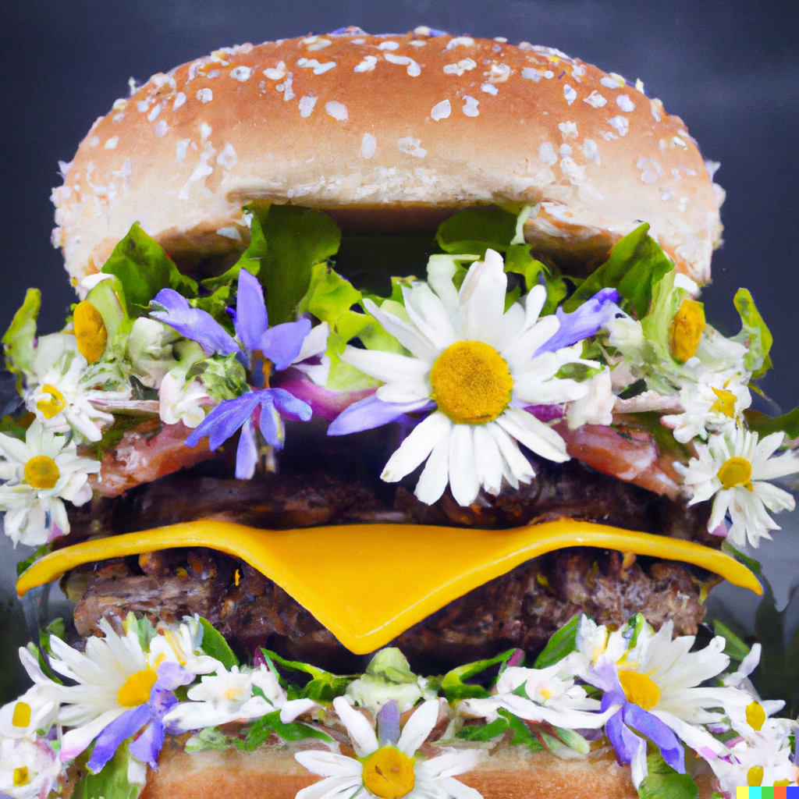
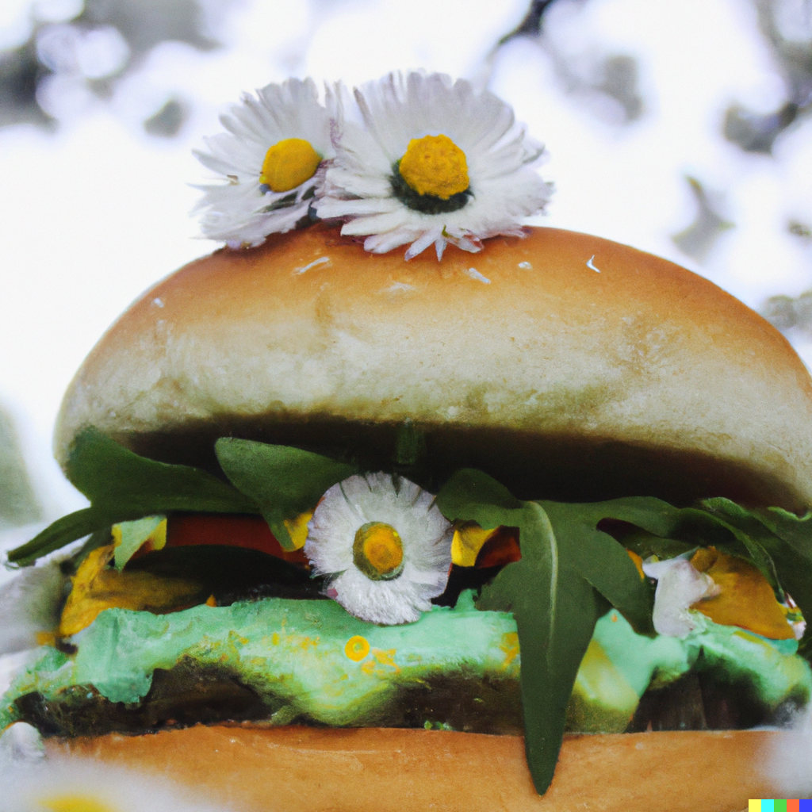
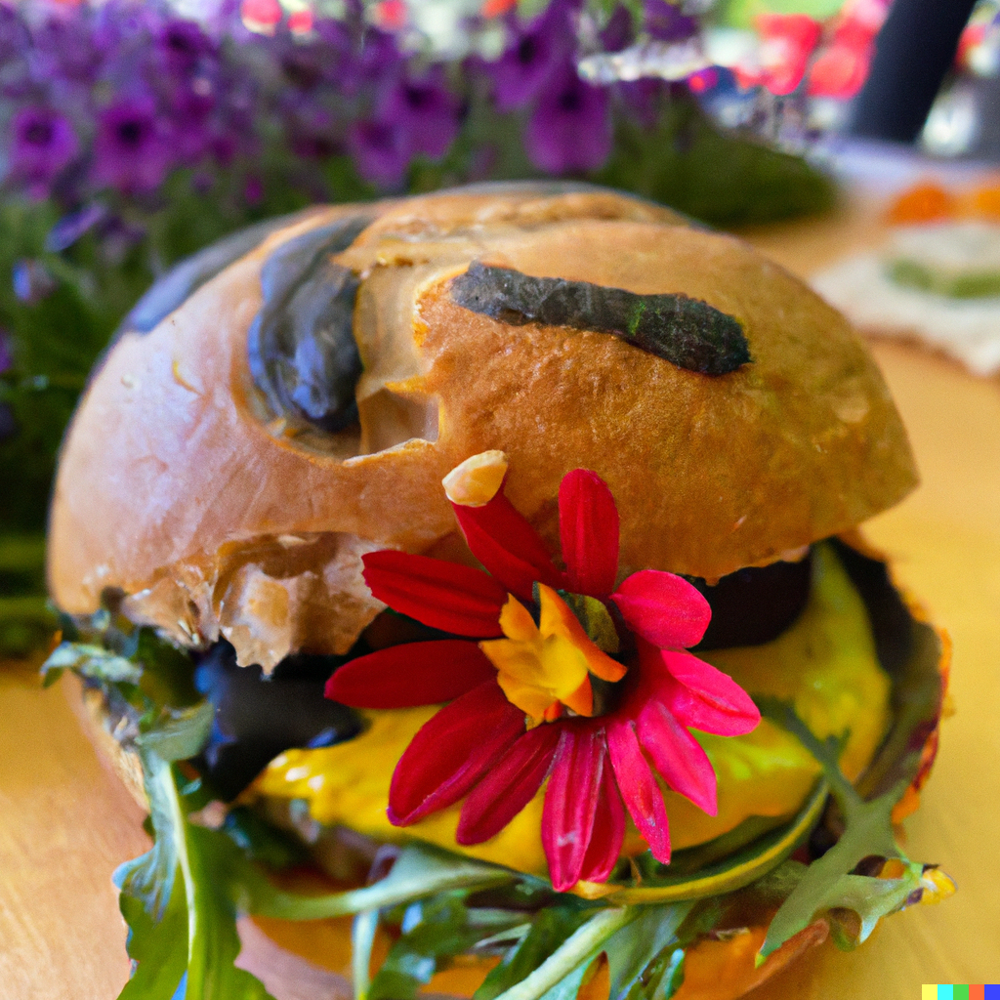
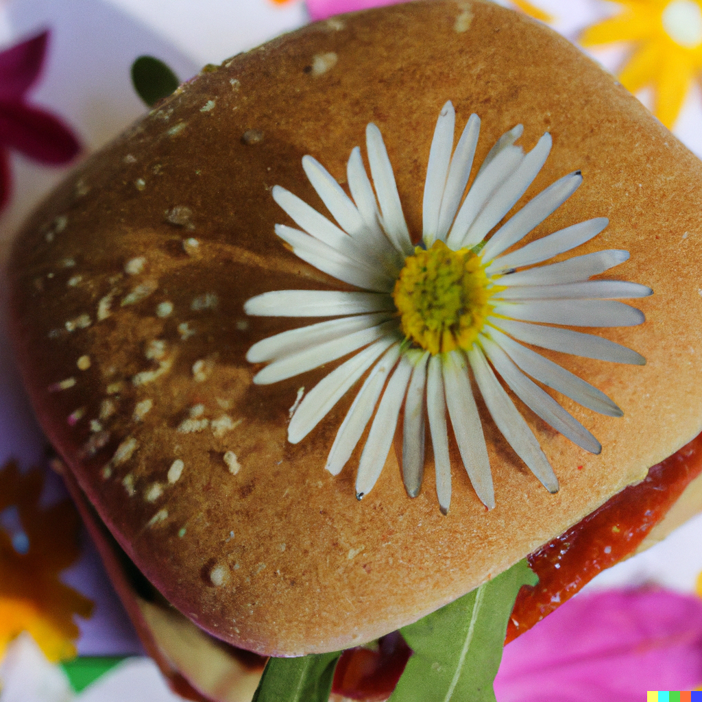
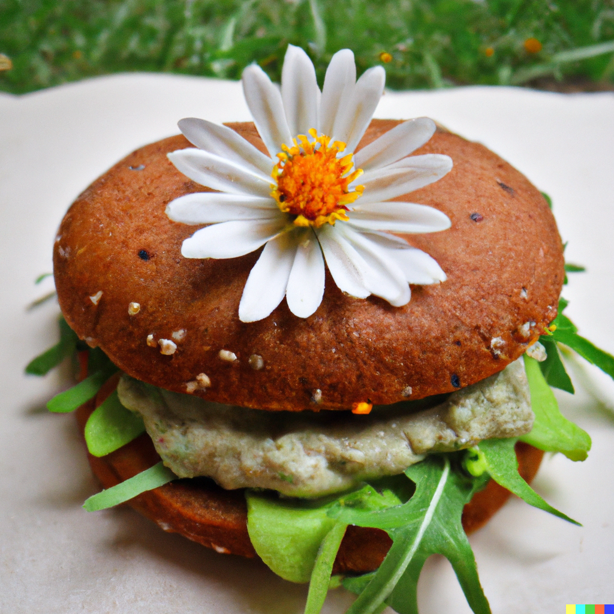
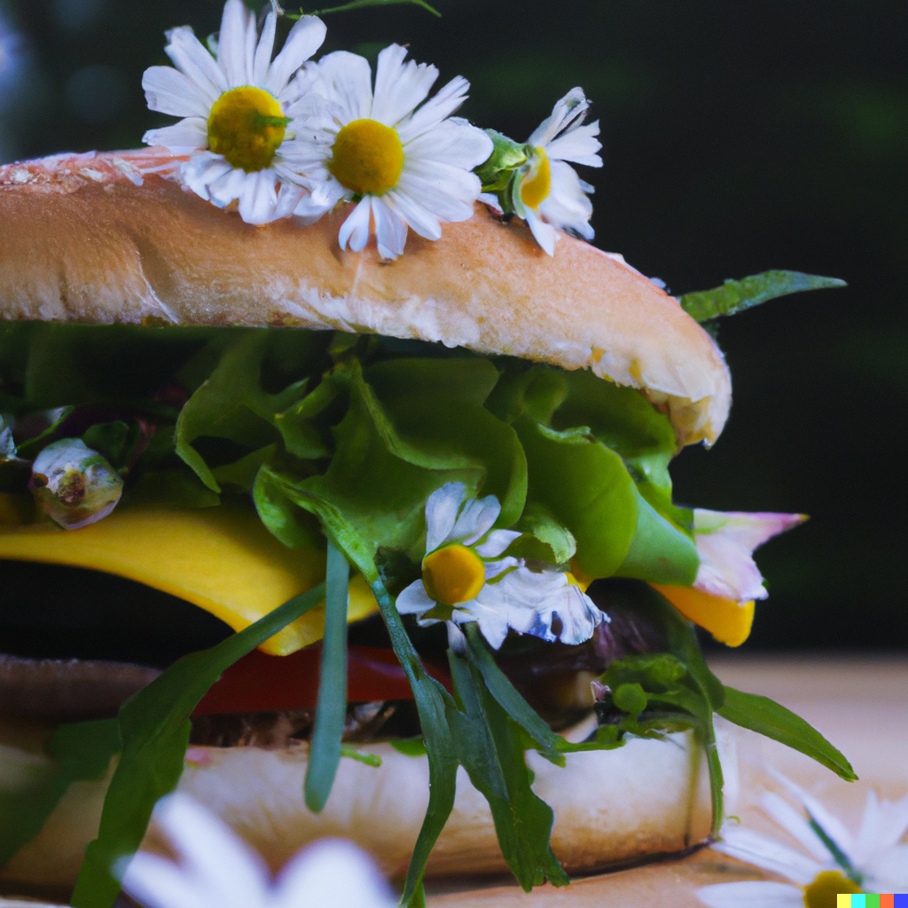

22. December

The Ruby Razzle Dazzle Daisy Delight Burger
Ingredients:
- 1 cup of mashed lavender potatoes
- 1/2 cup of shredded jade kelp
- 1/4 cup of diced tangerine carrots
- 1/4 cup of chopped ruby onions
- 1/2 cup of crumbled indigo tofu
- 2 tablespoons of lemon mustard
- 1 teaspoon of rose hot sauce
- 1/2 teaspoon of charcoal pepper
- 1/4 teaspoon of cream salt
- 1 cup of fresh daisy greens, finely chopped
- 1/2 cup of flour made from ground chestnut grains
- 2 tablespoons of melted olive oil
Instructions:
- First, do a little dance to get yourself pumped up for burger making.
-
In a large mixing bowl, combine the mashed lavender potatoes, shredded jade kelp, diced tangerine carrots,
chopped ruby onions, and chopped daisy greens. Mix until well combined, using your hands to squish everything
together.
-
Add the crumbled indigo tofu, lemon mustard, rose hot sauce, charcoal pepper, and cream salt to the bowl. Mix
until well combined, using your feet to stomp on the ingredients (but be careful not to break the bowl!).
-
Form the mixture into four burger patties, using the flour made from ground chestnut grains to help them hold
their shape. Make sure to shape the patties into fun and interesting shapes, like "stars" or "hearts".
-
Heat the olive oil in a large frying pan over medium heat. Once the oil is hot, carefully place the burger
patt
ies in the pan and cook for 3-4 minutes on each side, or until golden brown and crispy. Use your imagination to come up with creative names for each burger patty, like “The Purple Powerhouse” or “The Jade Jamboree”.
- Serve the burgers on a bed of fresh daisy greens, and enjoy with a cold, three times whisked daisy smoothie on the side. Don’t forget to make a silly face with every bite!





Leckerer Kuss :*